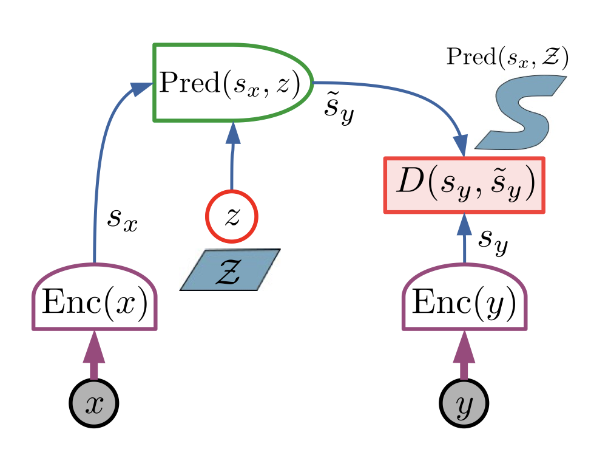
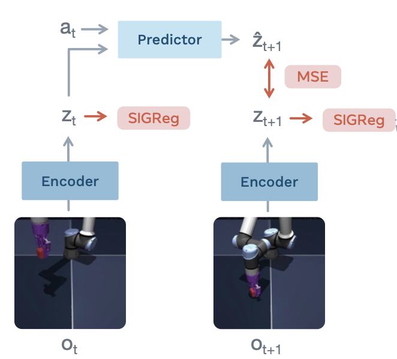

I am reading some interesting papers from the JEPA line of work. This note is written to summarize some of them briefly in order: the original paper that defined the architecture, the image and video instantiations (I-JEPA, V-JEPA, V-JEPA 2), and the elegant method for preventing representation collapse (LeJEPA), and later some world model applications (LeWorldModel, AdaJEPA).
1. The origin: JEPA as an energy-based architecture
The Joint-Embedding Predictive Architecture was introduced in LeCun's position paper as the centerpiece of a proposed path toward autonomous machine intelligence. The setup: two related inputs, a context \(x\) and a target \(y\), are encoded separately into \(s_x = \mathrm{Enc}(x)\) and \(s_y = \mathrm{Enc}(y)\). A predictor then tries to reach \(s_y\) from \(s_x\), aided by a latent variable \(z\), producing \(\tilde{s}_y = \mathrm{Pred}(s_x, z)\). The architecture is energy-based: the quality of a pair \((x, y)\) is scored by
\[ \begin{aligned} E_\theta(x,y,z) &= D\!\left( s_y,\operatorname{Pred}_\theta(s_x,z) \right), \qquad z^\star(x,y) = \arg\min_z E_\theta(x,y,z), \\ F_\theta(x,y) &= E_\theta\!\left(x,y,z^\star(x,y)\right) = \min_z E_\theta(x,y,z). \end{aligned} \]where \(D\) is a distance in embedding space and the free energy \(F\) minimizes over the latent. The latent \(z\) makes this more than regression: \(y\) is usually not a deterministic function of \(x\), and as \(z\) varies over its set \(\mathcal{Z}\), the single prediction becomes a family of predictions, absorbing exactly the part of \(y\) that \(x\) cannot determine.

The prediction happens in representation space, so the encoder is free to discard unpredictable, irrelevant detail instead of modeling every pixel. However, the architecture also admits a trivial zero-energy solution where the encoders collapse to a constant.
2. I-JEPA: the recipe works for images
I-JEPA instantiates the idea for still images with a ViT. One large context block is encoded, and the model predicts the representations of a few masked target blocks given their positions. Targets come from an EMA copy of the encoder with stopped gradients, which is what prevents collapse in practice. It reached strong downstream performance with far less compute than pixel-reconstruction baselines.
3. V-JEPA: feature prediction in time
V-JEPA extents the same I-LEPA idea to video by masking spatiotemporal tubes and predicting their representations from the visible context.
4. V-JEPA 2: from representations to planning
V-JEPA 2 scales up the pretraining recipe (more data, larger encoders, and longer video clips) and introduces action-conditioned world model post-training. It extends to a broader range of downstream applications, including VQA and real-world robotic planning.
5. LeJEPA: replacing the heuristics with a theory
LeJEPA is a non-contrastive, invariance-based self-supervised learning method. Unlike I-JEPA / V-JEPA, which learn representations through masked image / video modeling, LeJEPA directly aligns representations from multiple views using an invariance loss. To prevent representation collapse, instead of relying on an EMA teacher and stop-gradient as in I-JEPA, LeJEPA introduces SIGReg, which encourages the embedding distribution to follow an isotropic Gaussian distribution \(\mathcal{N}(0,I_d)\).
\[ \mathrm{SIGReg}(Z) = \frac{1}{M} \sum_{m=1}^{M} \mathrm{EP}\!\left( \{a_m^\top z_i\}_{i=1}^{n} \right), \qquad a_m \sim \mathrm{Unif}(\mathbb{S}^{d-1}), \] \[ \mathcal{L}_{\mathrm{LeJEPA}} = \mathcal{L}_{\mathrm{pred}} + \frac{\lambda}{V} \sum_{v=1}^{V} \mathrm{SIGReg}(Z_v). \]6. LeWorldModel: the recipe, end to end from pixels
LeWorldModel (LeWM) applies the LeJEPA philosophy to world modeling. In LeWM, an encoder maps frames to a compact latent, an action-conditioned predictor models dynamics in that latent space, and the whole system trains end to end from raw pixels with only two loss terms: next-embedding prediction and a Gaussian regularizer on the latents. The payoff is small and practical: ~15M parameters model, planning up to 48 times faster than foundation-model-based world models while staying competitive across diverse 2D and 3D control tasks.

7. AdaJEPA: adapting the world model in the loop
AdaJEPA focuses on what happens after training, when the world model meets a world that has drifted. It performs test-time adaptation inside the closed loop of model predictive control: plan, execute the first action chunk, treat the observed next-state transition as a free self-supervised signal, take as little as one gradient step on the model, and replan. Such continuous recalibration requires no additional expert demonstrations and substantially improves success rates on goal-reaching tasks.
References
- Y. LeCun, A Path Towards Autonomous Machine Intelligence (position paper, OpenReview, 2022).
- M. Assran et al., Self-Supervised Learning from Images with a Joint-Embedding Predictive Architecture (I-JEPA, CVPR 2023, arXiv:2301.08243).
- A. Bardes et al., Revisiting Feature Prediction for Learning Visual Representations from Video (V-JEPA, 2024, arXiv:2404.08471).
- M. Assran et al., V-JEPA 2: Self-Supervised Video Models Enable Understanding, Prediction and Planning (2025, arXiv:2506.09985).
- R. Balestriero and Y. LeCun, LeJEPA: Provable and Scalable Self-Supervised Learning Without the Heuristics (2025, arXiv:2511.08544).
- L. Maes et al., LeWorldModel: Stable End-to-End Joint-Embedding Predictive Architecture from Pixels (2026, arXiv:2603.19312).
- Y. Wang et al., AdaJEPA: An Adaptive Latent World Model (2026, arXiv:2606.32026).